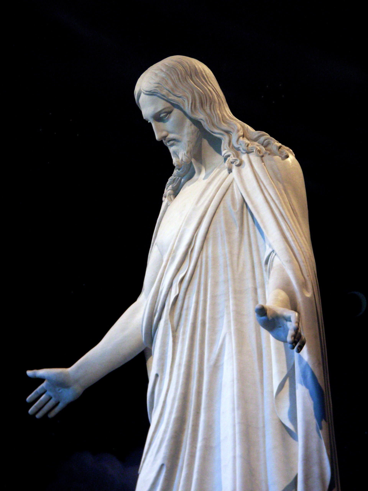
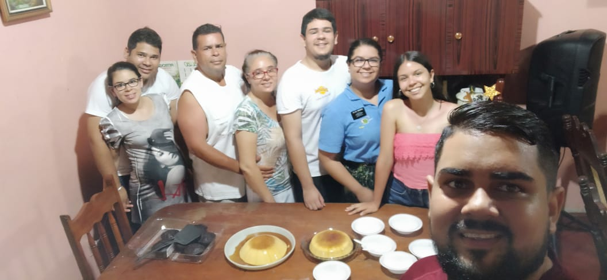
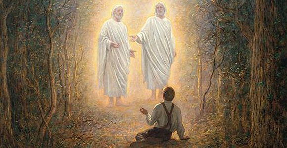

Mi filosofia de la Vida
Mis Creencias
Creencia Principal: La Trinidad
La Trinidad me ayuda a identificarme en el Plan de Salvación de mi Padre Celestial. Me da el conocimiento que soy un Hijo de un Dios Supremo que es mi Padre Celestial, de un Rey que es mi Hermano Mayor y a un Espíritu Santo guía y consolador. Me inspira a esforzarme, a tener un fuerte testimonio espiritual y temporal, y a ser mejor cada día. Sé que un día estuve en la Vida Preterrenal donde se me escogió para venir a esta tierra, a apoyar el plan de Salvación y a preparar esta tierra para recibir a un miembro de la Trinidad, Jesucristo mismo.
Jesucristo
Yo se que Jesucristo es mi Salvador y Redentor.
El ha expiado mis pecados y es mi hermano mayor. Me ha bendecido siempre
y se que lo seguira haciendo mientras me esfuerze y sea obediente

La Autosuficiencia

Creo firmemente en que la Educación provee un mejor futuro a una
persona, si es que la aplica a su vida y se esfuerza para lograr más
metas y con ello encontrar un mejor empleo de acuerdo a sus
conocimientos. Es el esfuerzo constante la clave de esta, tengo
ánimo para aspirar a cosas que sean necesarias e importantes en mi
vida que puedan llevarme al éxito temporal y espiritual.
Mi Familia
En la Preexistencia escogí una familia para vivir en esta tierra de
probación. Sé que sin ella y sin su apoyo estaría solo, no contaría
con el amor, bondad de las maravillosas personas que en ella se
encuentran, El algo fundamental tanto para el Plan de Salvación
de mi Padre Celestial como para mí, me motiva ya que sé que ellos
jamás me abandonaran por ninguna circunstancia, ni por esta vida
ni en la eternidad.

La Felicidad
Vine a esta tierra a experimentar cantidad de sentimientos, entre
ellos la Felicidad. Sé que habrá m omentos duros en los que me
desanimare, sin embargo sé que si mantengo un sentimiento de
ánimo, lograre salir de ellos, alcanzando felicidad. Si me esfuerzo
en mi vida, mis metas, lograre felicidad, si me esfuerzo en ser
mejor, en ser diferente cada día, tendré experiencias de gozo.
Mi Espiritualidad y mi Fe
Mi fe y testimonio me ayudan a ubicarme donde estoy y
adonde dirigirme. A confiar en mi Padre Celestial y Jesucristo
quienes me otorgan la guía de un maravilloso espíritu que me
testifica la verdad. Me llena de gozo haber conocido el
Evangelio Restaurado de Jesucristo que me ayuda a sentirme
cada vez más cerca de él.
Mi espiritualidad me ha llevado a obtener una comunicación
constante con mi Creador y debido a ello en mí he cosechado
Fe. Fe que me a ayuda a saber a dónde dirigirme, Fe para
confiar en Mi Creador y en mi Salvador, quienes me otorgan
la guía de un maravilloso Espíritu el cual me da guía y consuelo
y ayuda a que mi Espiritualidad crezca, para sentirme cada vez
más Cerca de Dios, y siempre hacer lo correcto.

Mi Educacion
Sin educación en mi vida, no tendría conocimientos los cuales me
hayan dirigido a donde hoy estoy. No tendría oportunidades que
me llevasen más cerca del éxito. Hoy pongo en práctica los
conocimientos que aprendo para desarrollar mejores habilidades,
las cuales las pueda aplicar en un mundo laboral y así estar más
cerca de mi Autosuficiencia.
Las Oportunidades
Sé de qué oportunidades hay pocas en este mundo y debo
aprovechar y dar lo máximo con cada una de ellas. Las
oportunidades me dan la fortuna de avanzar, desarrollar
habilidades y demostrar lo mejor de mí. Tanto en estudios y
laborales. También mi Padre Celestial me da muchas
oportunidades para avanzar siempre en rectitud en este mundo de
Probación y debo estar agradecido por cada una de ellas.